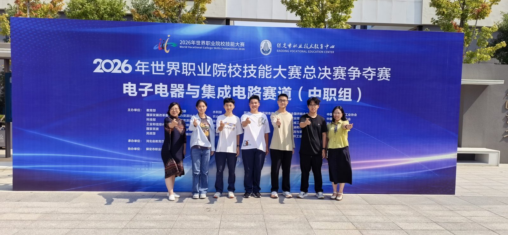
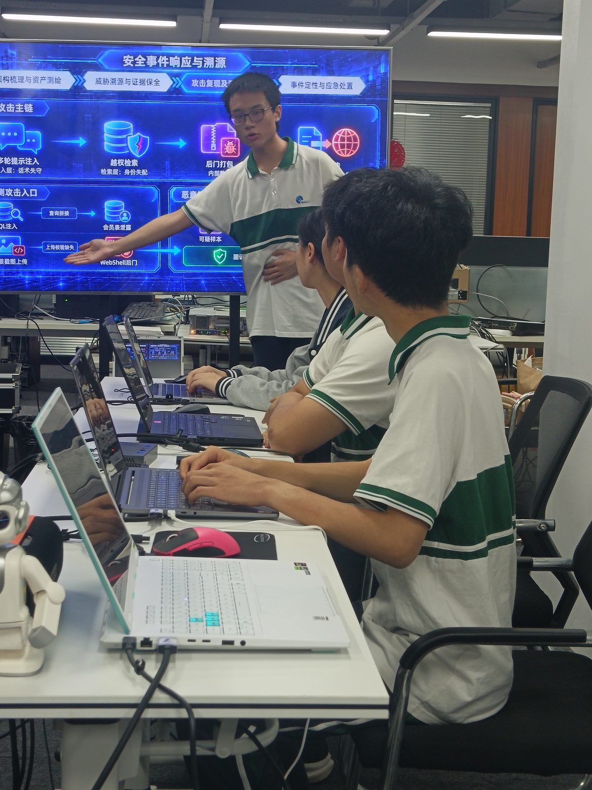
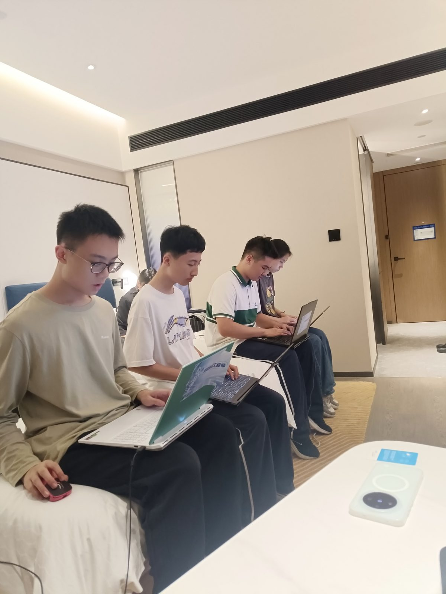
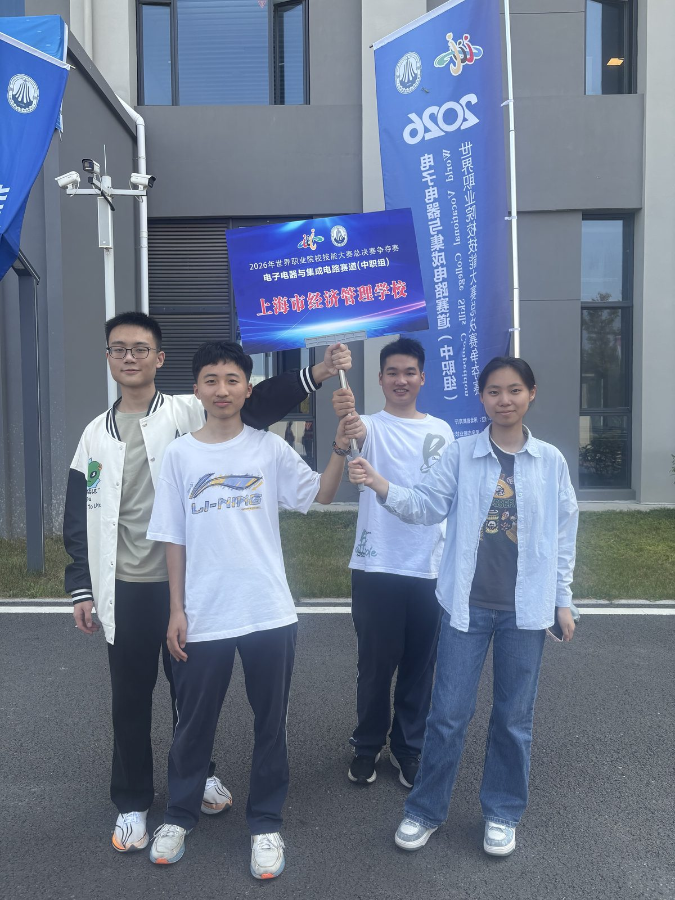
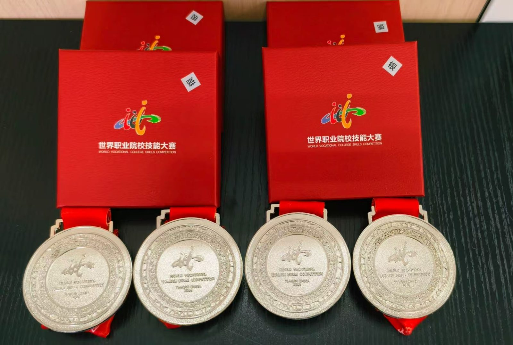

备 赛 闭 环
“把训练当成正式比赛，把比赛当成训练”
—— 指导老师 朱艳梅
自9月4日进入集中备赛阶段后，在朱艳梅和李联鑫老师的指导下，团队逐步形成了“训练—复盘—指导—修改—再训练”的备赛闭环。
引 言
近日，2026年世界职业院校技能大赛总决赛争夺赛电子电器与集成电路赛道圆满落幕。来自全国75所学校的选手同台共竞。
学校计算机系25008班吴晨雨（班主任：柯宇）、25008班王子淼（班主任：柯宇）、25007班刘博文（班主任：张雄风）、25007班苗森（班主任：张雄风）四名同学组成的参赛团队，在指导老师朱艳梅、李联鑫的带领下，凭借扎实的专业技能和默契的团队协作，荣获该赛道银奖。此前，团队在上海市市赛中斩获一等奖，成功取得总决赛争夺赛资格。
- 吴晨雨25008班 · 班主任 柯宇
- 王子淼25008班 · 班主任 柯宇
- 刘博文25007班 · 班主任 张雄风
- 苗森25007班 · 班主任 张雄风
指导老师朱艳梅李联鑫
本篇以闭环、赛前、赛中、赛后为线索，还原这段“把训练当比赛”的淬炼历程。

赛前
闭环淬炼
9月4日进入集中备赛 · 全真模拟演练
赛 事 分 量
世界职业院校技能大赛紧密对接产业发展和真实岗位需求，不仅考验参赛选手对专业知识和技术的综合运用，也对团队协作、现场应变等能力提出了较高要求。
本次争夺赛共吸引75所学校同台比拼，竞争十分激烈。
从市赛一等奖到世界大赛领奖台，这一跨越既是对学生专业能力的一次检验，也是对学校专业教学和实践育人成果的一次展示。


闭 环 怎 么 转
-
训练
按照正式比赛的流程和时间组织全真模拟演练
-
复盘
每轮训练结束后，师生共同复盘训练过程
-
指导
两位老师及时梳理学生暴露的问题，从项目细节、操作流程的合规性与团队衔接等方面提出改进建议
-
修改
四名学生则根据训练中暴露的问题和教师的指导意见主动调整、反复验证
-
再训练
把发现的问题落实到修改和下一轮训练中
如此循环往复，在不断发现问题、解决问题、再次验证的过程中，项目完成质量和团队配合逐步趋于稳定。
05 再训练 → 01 训练：五环首尾相接，循环往复
学 校 保 障
师生能够集中精力投入备赛，背后离不开学校多方面的协调支持。学校围绕总决赛争夺赛的备赛需求，统筹安排训练时间，为团队提供专用训练场地和相关资源保障；校领导多次到训练场地关心慰问，及时了解实际需求，给予资源支持和鼓励，为训练和赴赛做好协调工作。
赛中
现场四步
既定分工 · 密切配合 · 完整呈现
-
现场表现 · 四步展示
正式比赛中，面对紧张的比赛节奏和现场压力，四名学生按照既定分工密切配合，围绕项目背景、方案设计、技能实现和成果应用有序展开展示。
-
分工与衔接 · 荣获银奖
从项目讲解到现场操作，从个人任务完成到团队衔接，四名学生将前期反复训练形成的配合方式和操作习惯运用到赛场，在有限的展示时间内相互配合、及时衔接，将项目的整体思路和实践成果完整呈现，最终顺利完成比赛展示，荣获银奖。
赛道成绩银奖

赛后
新的起点
肯定 · 衔接 · 新的起点
一枚银奖，记录的是一次比赛的结果，也凝聚着学生的坚持、系部教师的付出和学校各方面的支持。
-
肯定 · 新起点
这份成绩既是对前期努力的肯定，也是继续前行的新起点。
-
教学 · 实践 · 竞赛
学校将继续把专业教学、实践训练与技能竞赛有机衔接，为学生搭建更多展示技能、锻炼能力的平台，引导学生在技能逐梦的赛道上奋勇争先。

赛 程 速 览
| 阶段 | 关键节点 | 核心内容 |
|---|---|---|
| 闭环 | 9月4日进入集中备赛 | 训练 → 复盘 → 指导 → 修改 → 再训练，如此循环往复，项目完成质量和团队配合逐步趋于稳定 |
| 赛前 | 75所学校同台比拼 | 紧密对接产业发展和真实岗位需求 → 学校统筹安排训练时间、提供专用训练场地和相关资源保障 → 校领导多次到训练场地关心慰问 |
| 赛中 | 总决赛争夺赛现场 | 按照既定分工密切配合 → 围绕项目背景、方案设计、技能实现和成果应用有序展开展示 → 荣获银奖 |
| 赛后 | 报道 2026-10-19 发布 | 成绩既是对前期努力的肯定，也是继续前行的新起点 → 把专业教学、实践训练与技能竞赛有机衔接 |
留 言 区
还没有留言，来说第一句吧